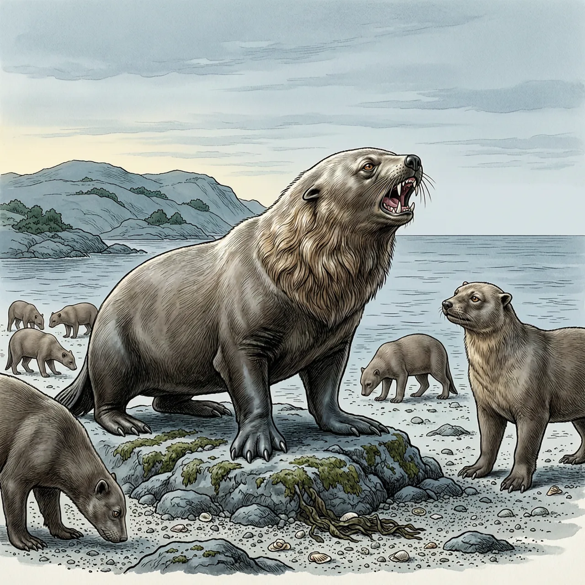
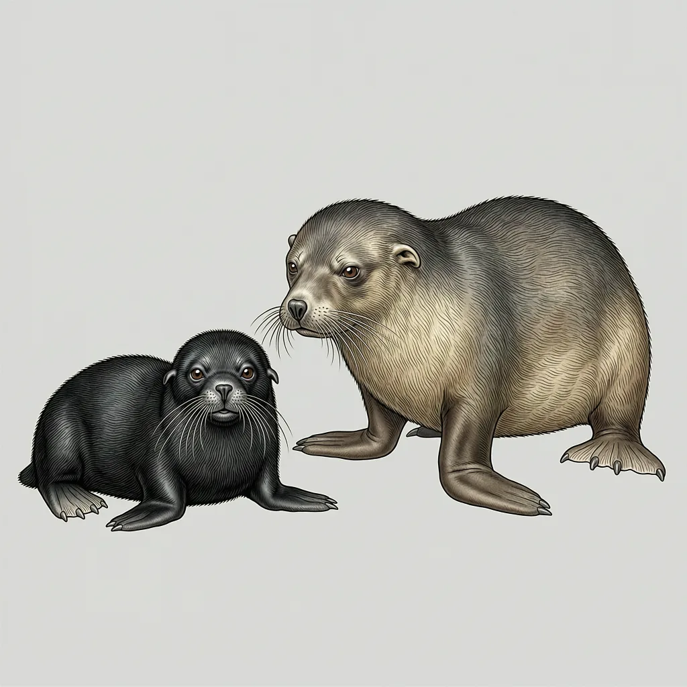

北海狗是体型最大的海狗，生活在太平洋北部和白令海峡一带，每年只在普里比洛夫群岛等岛上停留四个月：雄性五月末上岸抢领地，雌性七月初加入一雄多雌集团，幼崽在岛上出生。其余时间它们在海上度过，一路游到加利福尼亚中部海岸，途中从不上岸。
五月末，雄北海狗先回到阿拉斯加与西伯利亚之间的普里比洛夫群岛，在岸边为抢一块领地咆哮、撕打，但多半不会把对方打死。这一物种分布在太平洋北部和白令海峡一带，不迁徙的那几个月就待在这样靠近极地的群栖地上，科曼多尔群岛也有一处。寒冷塑造了它的样子：保暖靠一年褪一次的厚毛和一层约5公分厚的皮下脂肪，脸上那排长而敏感的胡须用来探知四周有没有食物或天敌，视觉和听觉都很敏锐。同一片海域里还生活着海象、独角鲸和北极熊，虎鲸、鲨鱼与北极熊会捕食北海狗。
北海狗把繁殖挤在这四个月里。交配在群栖地完成，雌北海狗在第二年产崽：怀孕期算下来有12个月，但受精后的头5个月胚胎并不发育，这段停顿保证幼崽落在岛上出生，而不是落在开阔的海里。母亲照料幼崽一两天，就必须下海捕食，把自己的体力补回来。雌性5岁开始具备生殖能力，此后通常每年都会生育，一般每胎一仔，偶尔一胎两仔。还有一件事更麻烦：每只北海狗长大后要回到自己出生的那座岛找配偶，认路靠的是太阳的位置和海水散发的气味。
剩下的八个月全部在海面上。北海狗成群从白令海南下到加利福尼亚中部海岸，之后再返回，这一洄游要用去8个月，途中始终与海岸保持至少10英里的距离，一次都不上岸。它们并不是没有别的选择：北海狗出生不久就能以每小时25公里的速度持续游5分钟，能潜到水下72米，在陆地上也不至于寸步难行，最快每小时8.5公里。至于为什么非要贴着大洋走、为什么一路不肯上岸，没有人给出解释。
